Die Bibliotheksverwaltung läuft im Browser – am PC, am Laptop und auf dem Smartphone. Es muss nichts installiert werden. Dieses Handbuch erklärt alle Funktionen, sortiert nach dem, was Sie im Programm dürfen.
Jedes Konto hat genau eine Rolle. Sie bestimmt, welche Menüpunkte Sie sehen.
Bücher suchen, selbst ausleihen, verlängern und die eigenen Ausleihen im Blick behalten.
Kapitel 2 und 3Bücher erfassen und pflegen, an der Ausleihtheke verleihen und zurücknehmen, Überfälliges nachhalten.
Kapitel 2 bis 4Alles – dazu Benutzer, Gruppen, Anmeldung über Active Directory, E-Mail, Sicherheit und Datensicherung.
Alle KapitelGruppen ordnen Bücher und Menschen einander zu, zum Beispiel IT-Ausbildung oder Kaufleute. Ein Buch gehört entweder einer Gruppe oder ist allgemein. Allgemeine Bücher können alle ausleihen, Gruppenbücher nur die Mitglieder dieser Gruppe.
Links steht die Seitenleiste mit allen Bereichen, oben die Suchleiste für den Katalog. Ganz unten in der Seitenleiste finden Sie Ihren Namen, den Schalter für hellen und dunklen Modus und das Abmelden. Zahlen in roten Kreisen weisen auf etwas hin, das Aufmerksamkeit braucht – etwa überfällige Ausleihen oder neue Registrierungen.
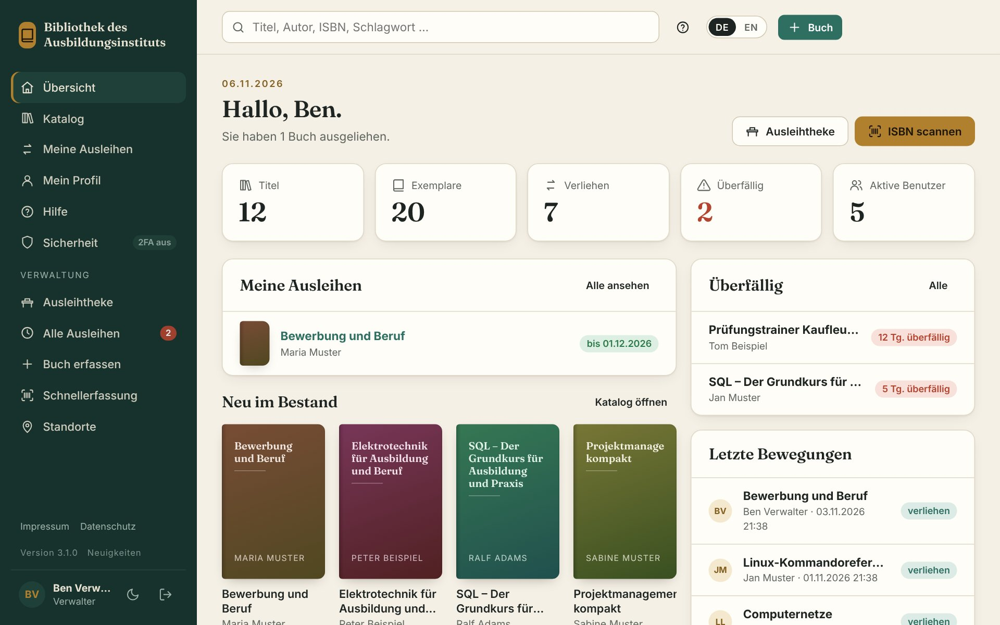
Das Programm gibt es auf Deutsch und Englisch. Oben rechts schalten Sie mit DE / EN um – auch schon auf der Anmeldeseite. Nach der Anmeldung wird die Wahl in Ihrem Profil gespeichert und gilt dann auf jedem Gerät und für alle E-Mails an Sie. Wer nichts wählt, bekommt die Sprache seines Browsers; passt keine, gilt die Standardsprache, die der Administrator unter Einstellungen → Allgemein festlegt.
Die Hilfe öffnen Sie über Hilfe in der Seitenleiste oder das ? oben rechts. Das Fragezeichen springt direkt zum Abschnitt für die Seite, auf der Sie gerade sind. Die Hilfe zeigt nur, was zu Ihrer Rolle gehört, und richtet sich nach den Einstellungen Ihrer Bibliothek – steht dort etwa „Leihfrist 28 Tage“, ist das auch wirklich Ihre Leihfrist. Über das Suchfeld finden Sie schnell das passende Thema; dieses Handbuch gibt es dort als PDF zum Herunterladen.
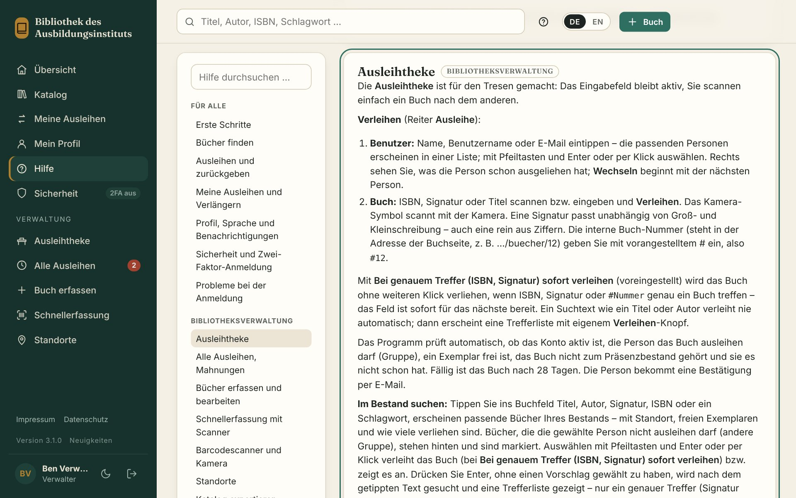
Unter Neuigkeiten (unten in der Seitenleiste neben der Versionsnummer und im Benutzermenü) steht kurz und verständlich, was sich in den letzten Versionen geändert hat – neue Funktionen, Verbesserungen und Sicherheitsupdates. Jeder sieht nur, was seine Rolle betrifft. Nach einem Update weisen ein kleiner Punkt und eine schmale Zeile auf der Übersicht auf Neues hin; einmal angesehen oder weggeklickt, verschwinden sie bis zum nächsten Update.
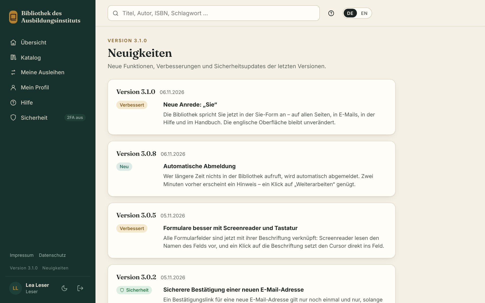
Die Bibliothek ist im Hausnetz und über das Internet erreichbar. Je nachdem, von wo Sie zugreifen und welche Rolle Sie haben, wird zusätzlich ein zweiter Faktor abgefragt.
Haben Sie eine Authenticator-App oder einen Sicherheitsschlüssel eingerichtet (siehe Abschnitt 3.7), folgt nach dem Passwort ein zweiter Schritt:
Nach einer Zeit ohne Aktivität meldet die Bibliothek Sie automatisch ab – zum Beispiel, wenn jemand den Platz an der Ausleihtheke verlässt, ohne sich abzumelden. Wie lange das dauert, legt die Administration fest (Standard: 12 Stunden, für Administratoren 60 Minuten). Ist die Warnung eingeschaltet, erscheint zwei Minuten vorher ein Hinweis; ein Klick auf Weiterarbeiten genügt, und Sie bleiben angemeldet. Aktivität in einem anderen Tab der Bibliothek zählt mit.
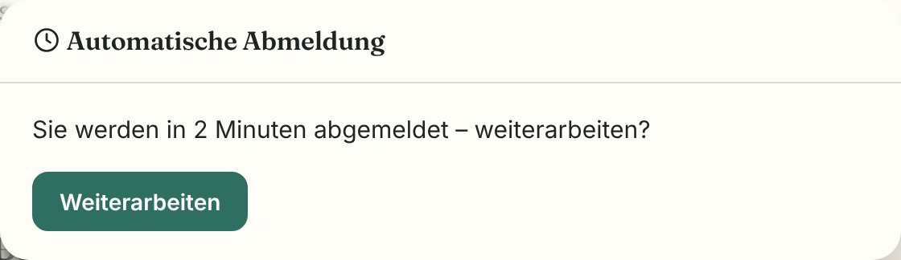
Auf dem Handy passt sich die Seite automatisch an. Die Seitenleiste öffnen Sie über das Menüsymbol ☰ oben links; Profil, Hell/Dunkel und Abmelden finden Sie im runden Symbol mit Ihren Initialen oben rechts.
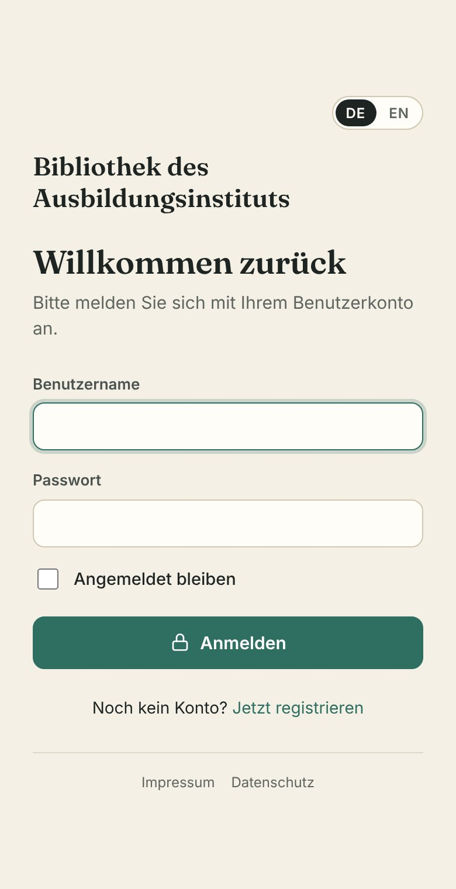
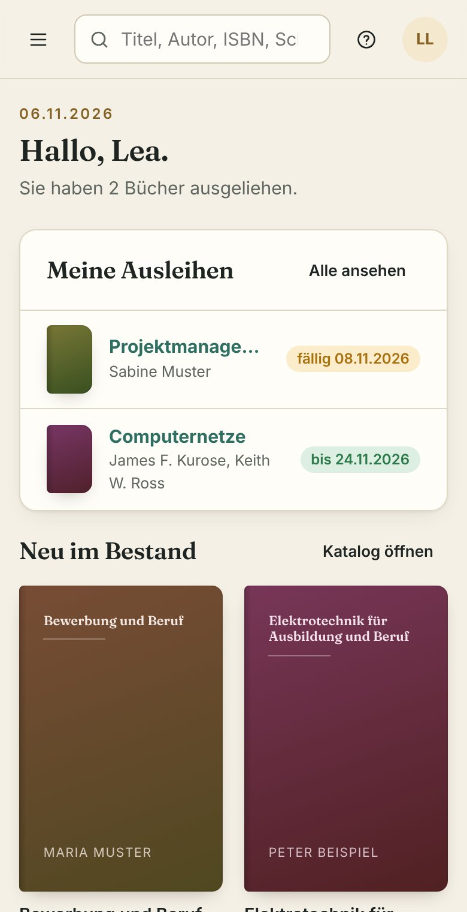
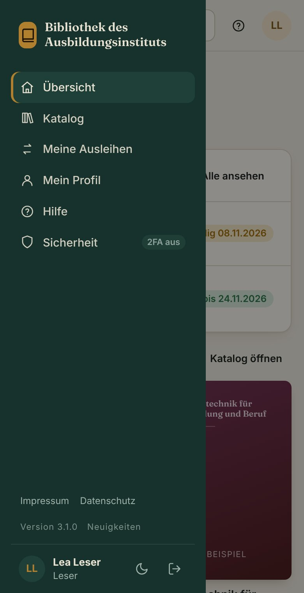
Abb. 7 – Anmeldung, Übersicht und geöffnetes Menü auf dem Smartphone.
| Meldung / Situation | Was tun? |
|---|---|
| „Benutzername oder Passwort ist falsch.“ | Schreibweise prüfen (Feststelltaste?). Aus Sicherheitsgründen verrät die Seite nicht, ob es das Konto gibt oder ob es gesperrt ist. |
| „Zu viele Fehlversuche“ | Nach 8 Fehlversuchen ist die Anmeldung 5 Minuten gesperrt; bei sehr vielen Fehlversuchen von verschiedenen Adressen (40 in 15 Minuten) bis zu 15 Minuten. Warten – oder ein Administrator hebt die Sperre sofort auf. |
| Passwort vergessen | Bei Netzwerk-Konten des Instituts setzt die IT das Passwort zurück. Bei lokalen Konten vergibt ein Administrator ein neues Passwort. Wer sein Passwort noch kennt, ändert es selbst unter Mein Profil. Eine „Passwort vergessen“-Funktion gibt es bewusst nicht. |
| Handy mit Authenticator-App verloren | Mit einem Wiederherstellungscode anmelden oder einen Administrator bitten, die Zwei-Faktor-Anmeldung zurückzusetzen. |
| „Die Authenticator-App muss neu eingerichtet werden“ | Mit Wiederherstellungscode oder Sicherheitsschlüssel anmelden und die App unter Sicherheit neu einrichten; den alten Eintrag in der App löschen. |
Dieses Kapitel gilt für alle Rollen. Leser sehen nur die hier beschriebenen Bereiche.
Nach der Anmeldung landen Sie auf der Übersicht. Sie zeigt Ihre aktuellen Ausleihen mit Fälligkeitsdatum und die zuletzt neu aufgenommenen Bücher. Die Farbe des Fälligkeits-Hinweises verrät den Stand: grün = noch Zeit, gelb = bald fällig, rot = überfällig.
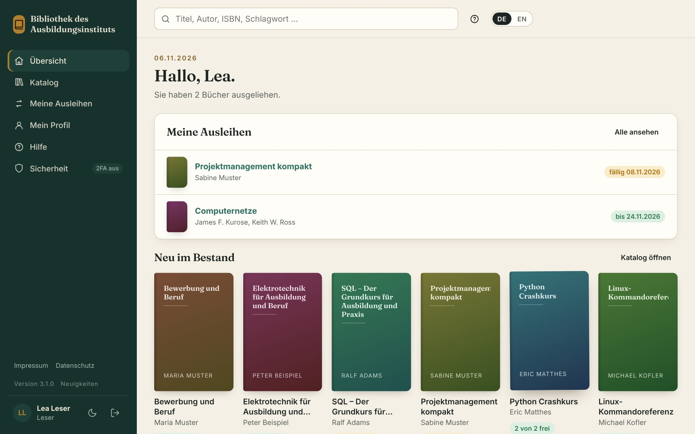
Unter Katalog finden Sie alle Bücher, die Sie sehen dürfen. Das Suchfeld oben durchsucht Titel, Untertitel, Autor, Verlag, Schlagwörter, Kategorie, Signatur, Standort und ISBN – Sie können auch direkt eine ISBN eintippen oder scannen. Schon beim Tippen (ab zwei Zeichen) erscheinen passende Bücher mit Autor, Signatur und freien Exemplaren; ein Klick oder Pfeiltasten und Enter öffnen das Buch direkt, Enter ohne Auswahl zeigt alle Treffer.
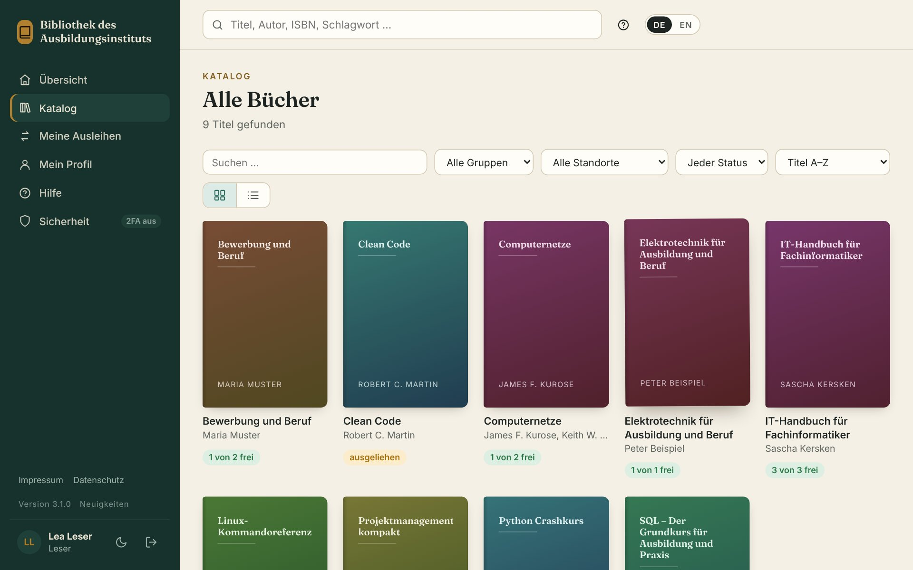
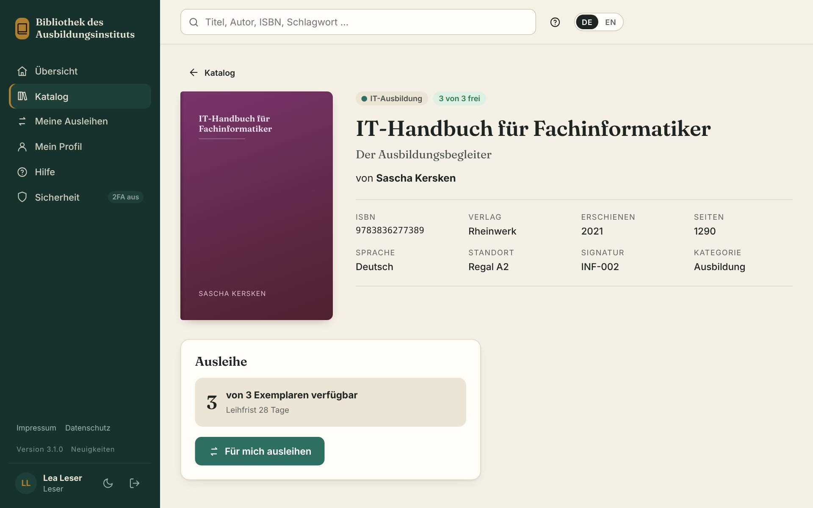
Sind alle Exemplare verliehen, steht auf der Buchseite Vormerken (wenn die Bibliothek Vormerkungen eingeschaltet hat). Sie kommen in eine Warteschlange und sehen Ihren Platz.
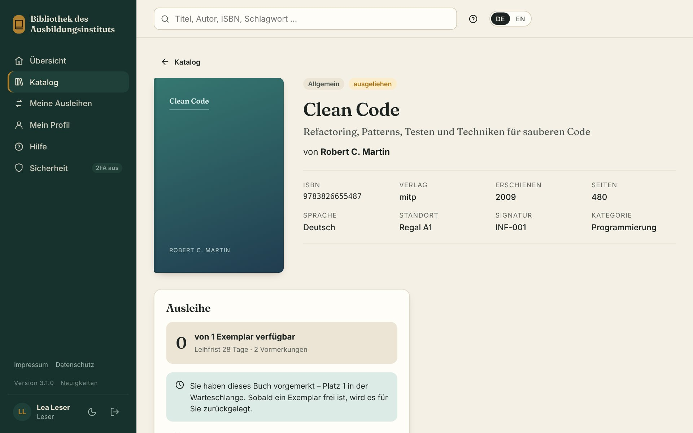
Unter Meine Ausleihen sehen Sie alles, was Sie gerade ausgeliehen haben, mit Ausleihdatum und Fälligkeit. Die Reiter oben zeigen nur Überfälliges oder Ihren bisherigen Verlauf.
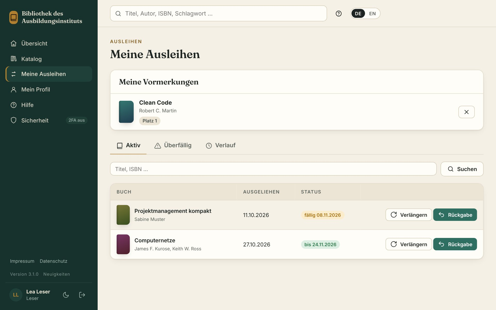
Unter Mein Profil stehen Ihr Ausleihverlauf und Ihre Kontodaten. Hier schalten Sie auch die E-Mail-Benachrichtigungen ein oder aus: Bestätigungen, Erinnerung kurz vor der Fälligkeit und Mahnungen. Lokale und selbst registrierte Konten ändern unter Meine Daten ihren Anzeigenamen und ihre E-Mail-Adresse selbst (bei Selbstregistrierung gilt eine neue Adresse erst nach Bestätigung per Link) und vergeben unter Passwort ändern ein neues Passwort (mindestens 10 Zeichen). Bei Netzwerk-Konten (Active Directory) kommen Name, E-Mail und Passwort aus dem Verzeichnis des Instituts und werden dort gepflegt.
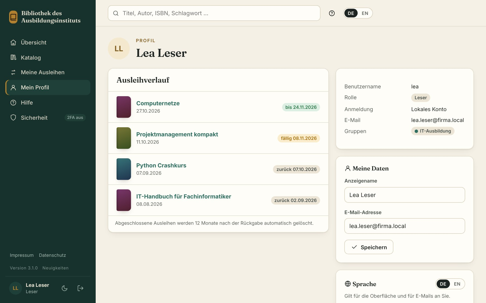
Ein zweiter Faktor schützt Ihr Konto, selbst wenn jemand Ihr Passwort kennt. Für Verwalter und Administratoren kann er vorgeschrieben sein – dann führt Sie das Programm nach der Anmeldung automatisch hierher. Sie finden den Bereich unter Sicherheit in der Seitenleiste.
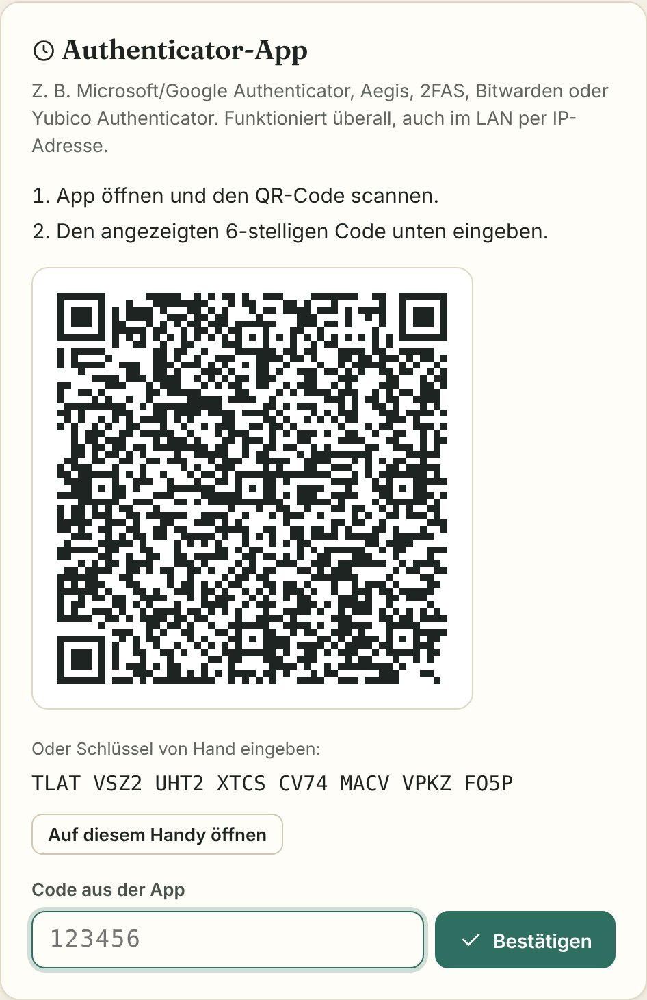
Geben Sie dem Schlüssel einen Namen (z. B. „YubiKey blau“), klicken Sie auf Hinzufügen und berühren Sie ihn, wenn er blinkt. Am besten registrieren Sie gleich einen Ersatzschlüssel. Sicherheitsschlüssel funktionieren nur über die verschlüsselte Adresse der Bibliothek (https) – und nur unter der Adresse, unter der sie eingerichtet wurden.
Wenn die Bibliothek es erlaubt, steht auf der Anmeldeseite ein Link Jetzt registrieren. Neue Konten sind immer Leser-Konten. Je nach Einstellung müssen Sie Ihre E-Mail-Adresse über einen Link bestätigen (48 Stunden gültig) und/oder auf die Freigabe durch die Bibliothek warten – Sie bekommen dann eine E-Mail. Das Passwort muss mindestens 10 Zeichen lang sein.
Verwalter pflegen den Bestand und verleihen Bücher. Die zusätzlichen Menüpunkte stehen in der Seitenleiste unter Verwaltung.
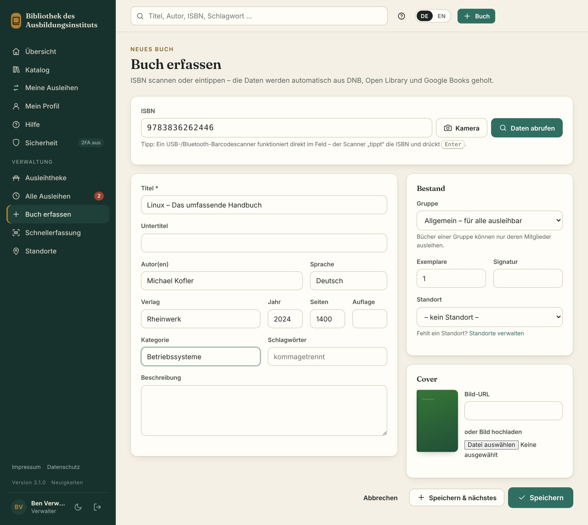
Für viele Bücher auf einmal – etwa beim Einrichten oder bei einer Lieferung. Rechts legen Sie Gruppe und Standort für alle folgenden Bücher fest. Dann scannen Sie eine ISBN nach der anderen:
Das Protokoll rechts listet alle Vorgänge der Sitzung mit Links zu den Büchern.
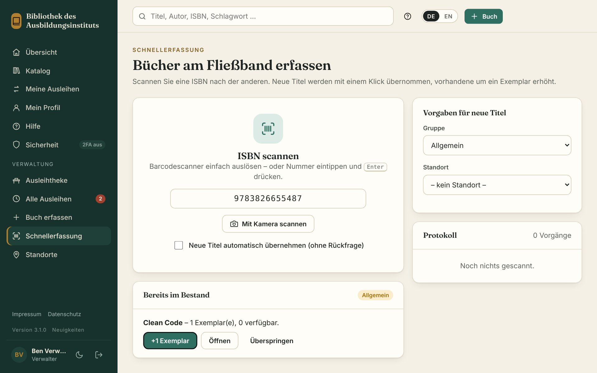
Unter Standorte legen Sie Ihre Regale, Räume und Schränke einmal fest – mehrere auf einmal, einen pro Zeile. Sobald es mindestens einen Standort gibt, wird er beim Erfassen, in der Schnellerfassung und beim Bearbeiten aus einer Liste gewählt statt getippt. So gibt es keine Tippfehler mehr.
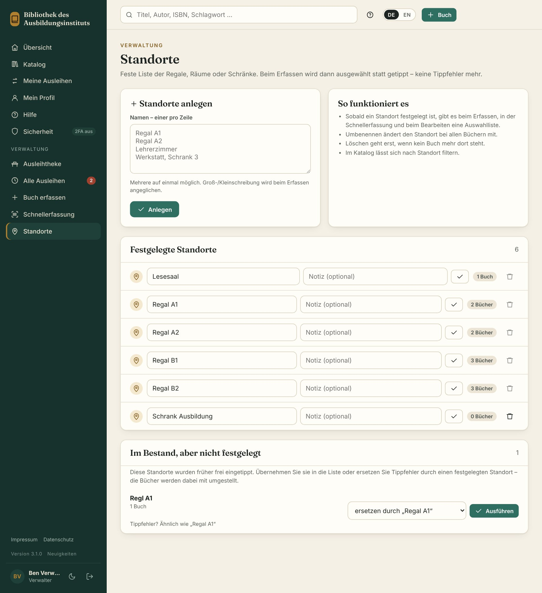
Auf der Buchseite finden Sie Bearbeiten und Löschen. Ein Buch, das gerade ausgeliehen ist, lässt sich nicht löschen. Die Zahl der Exemplare kann nicht unter die Zahl der verliehenen sinken. Unten auf der Buchseite steht der Verlauf aller Ausleihen dieses Buchs; ältere Vorgänge ohne Einzeldaten werden nur noch gezählt.
Über CSV oben im Katalog laden Sie den ganzen Bestand als Tabelle herunter (öffnet sich in Excel).
Unter jedem freien Buch, das Sie verwalten, steht im Katalog der Knopf Verleihen (in der Listenansicht rechts in der Zeile). Er öffnet die Buchseite direkt beim Formular An Benutzer verleihen, der Cursor steht schon im Feld Benutzer: Name, Benutzername oder E-Mail eintippen, Person aus der Liste wählen, bei Bedarf Fälligkeit und Notiz, Verleihen.
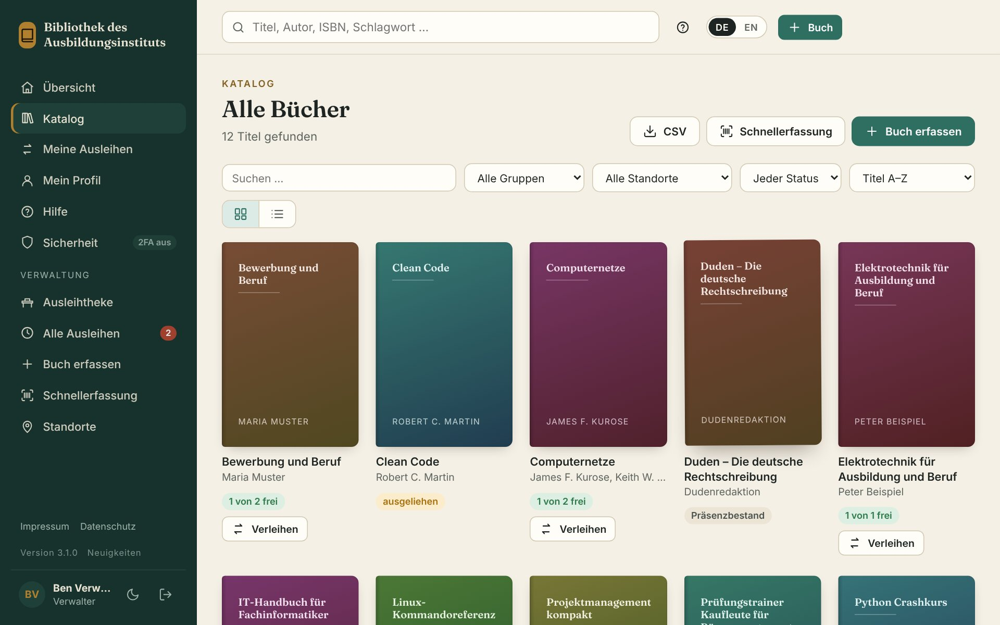
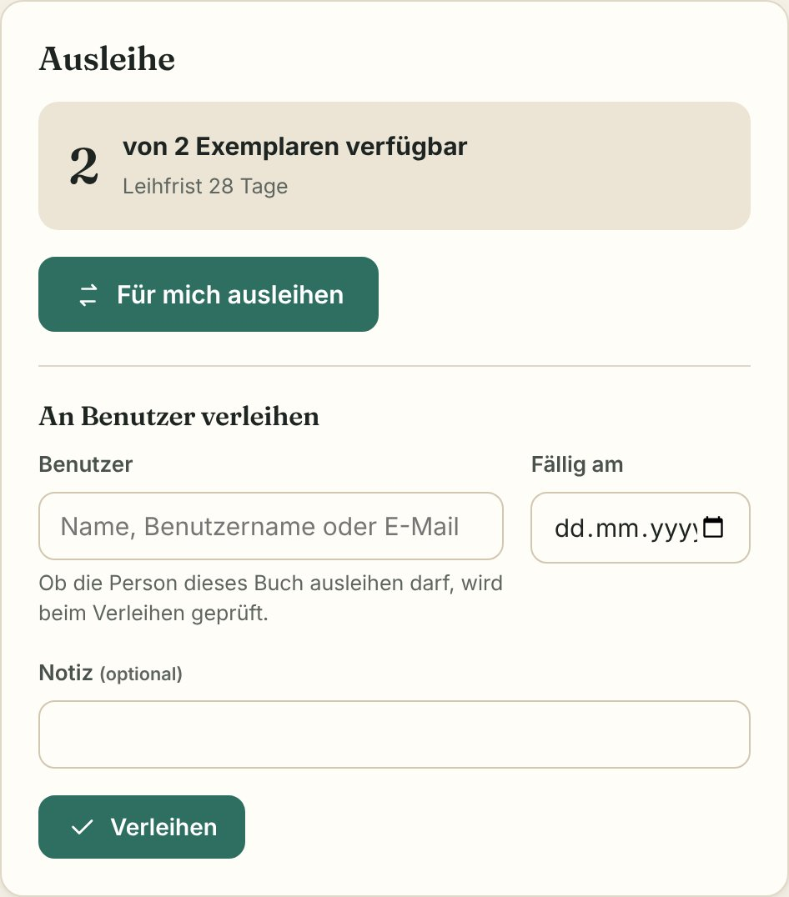
Die Ausleihtheke ist für den Tresen gemacht: Das Eingabefeld bleibt aktiv, Sie scannen einfach nacheinander.
# davor ein (z. B. #12) – reine Ziffern gelten als Signatur.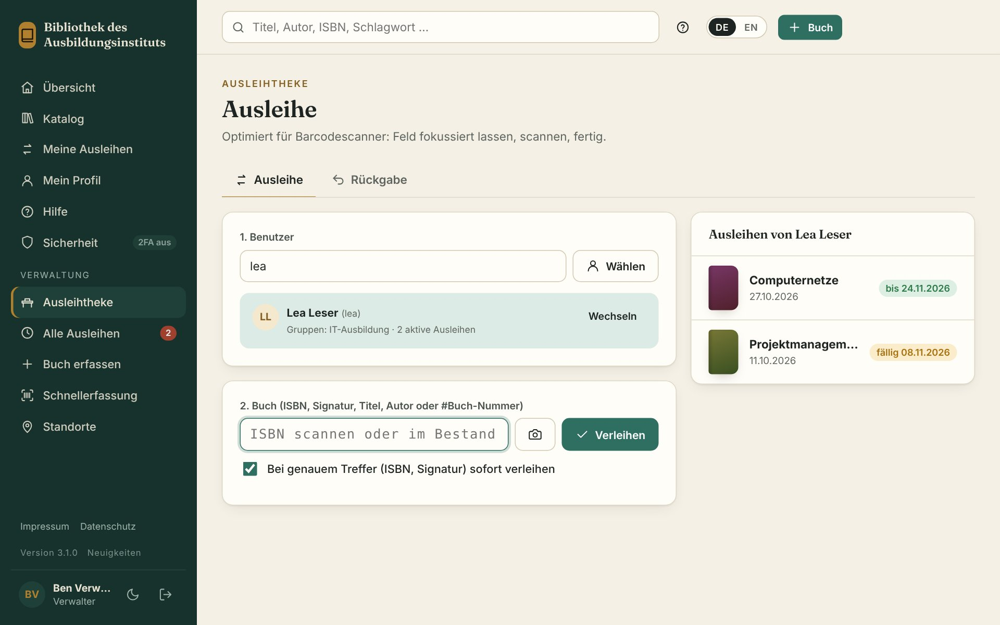
Das Programm prüft dabei automatisch, ob die Person das Buch ausleihen darf (Gruppe, Höchstzahl, Konto aktiv), ob ein Exemplar frei ist und nicht für eine Vormerkung zurückgelegt, und meldet den Grund, falls nicht. Bücher im Präsenzbestand werden an der Theke gar nicht erst zum Verleihen angeboten.
Im Reiter Rückgabe genügt es, das zurückgebrachte Buch zu scannen. Ist genau ein Exemplar verliehen, wird es bei einem genauen Treffer (ISBN, Signatur) direkt zurückgebucht; sonst wählen Sie die passende Ausleihe aus der Liste. Ist das Buch vorgemerkt, meldet die Theke „Bitte zurücklegen – vorgemerkt für …“ – dann das Buch beiseitelegen, statt es ins Regal zu stellen.
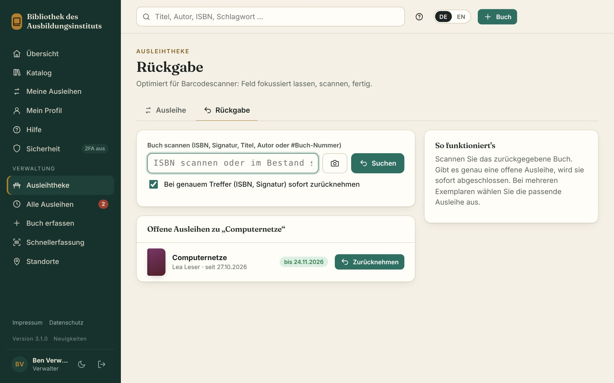
Auf der Buchseite sehen Sie die Warteschlange mit Namen, Datum und Status (wartet oder zurückgelegt bis …) und können einzelne Vormerkungen löschen. Kommt eine Person mit zurückgelegtem Buch an die Theke, steht es nach ihrer Auswahl oben unter „Für … zurückgelegt“ – ein Klick verleiht es. Vormerkungen schaltet ein Administrator unter Einstellungen → Ausleihe → Vormerken ein; dort stehen auch Abholfrist und Höchstzahl je Person.
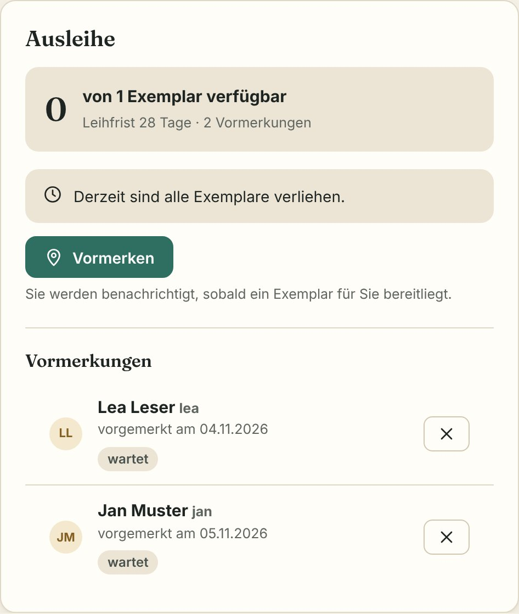
Unter Alle Ausleihen sehen Sie alle laufenden Ausleihen Ihres Bereichs, mit Reitern für Überfällig und den Verlauf. Die rote Zahl in der Seitenleiste zählt die überfälligen Ausleihen.
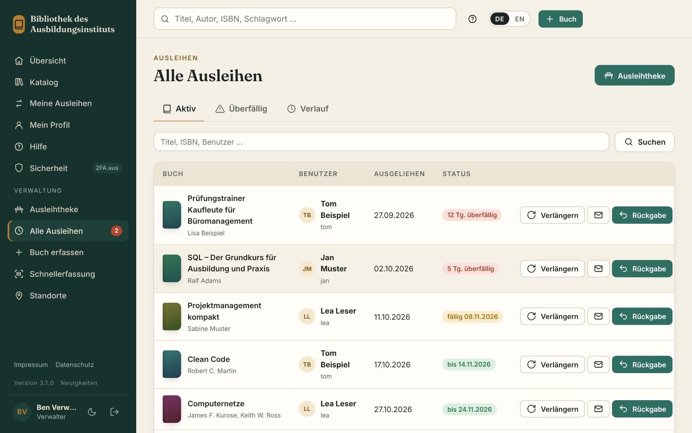
Erinnerungen vor der Fälligkeit und Mahnungen verschickt das Programm außerdem automatisch einmal täglich, wenn der E-Mail-Versand eingerichtet ist (siehe Abschnitt 5.5).
Ist ein Verwalter einer oder mehreren Gruppen zugeordnet, pflegt er nur die Bücher dieser Gruppen und die allgemeinen Bücher und sieht nur deren Ausleihen. Ein Verwalter ohne Gruppe ist für den ganzen Bestand zuständig. Standorte dürfen alle Verwalter anlegen; Umbenennungen, die Bücher fremder Gruppen betreffen würden, bleiben Administratoren und Verwaltern ohne Gruppe vorbehalten.
Administratoren richten die Bibliothek ein und kümmern sich um Konten, Sicherheit und Betrieb. Alle Bereiche stehen in der Seitenleiste unter Administration.
Die Benutzerliste zeigt alle lokalen Konten und alle Netzwerk-Konten, die sich schon einmal angemeldet haben – mit Rolle, Herkunft (lokal oder AD), Gruppen, laufenden Ausleihen und letzter Anmeldung. Markierungen weisen auf Besonderheiten hin: wartet auf Freigabe, gesperrt, Anmeldesperre, 2FA. Über das Auswahlfeld lässt sich danach filtern.
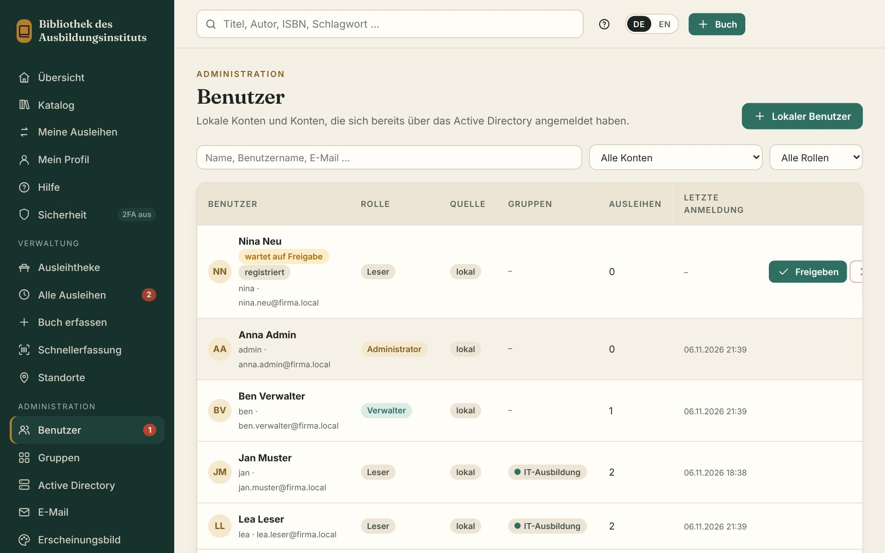
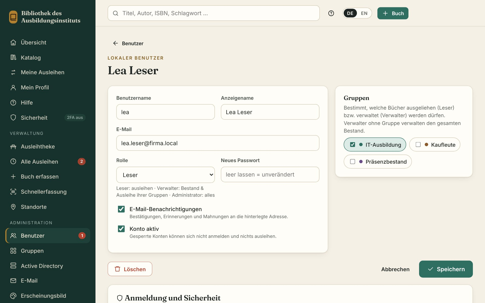
Unten im Konto steht der Bereich Anmeldung und Sicherheit:
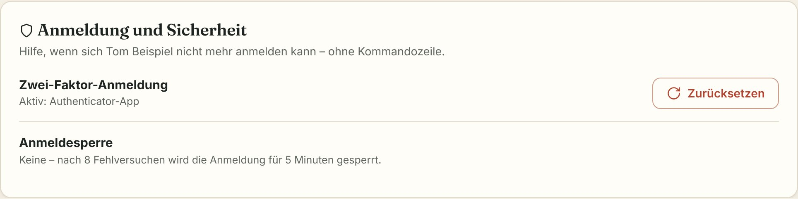
Unter Gruppen legen Sie Gruppen an, z. B. pro Ausbildungsgang. Jede Gruppe hat ihren eigenen Bestand; Mitglieder leihen nur Bücher ihrer Gruppen und allgemeine Bücher. Mitglieder fügen Sie in der Gruppe hinzu – oder Sie verknüpfen die Gruppe mit einer AD-Gruppe, dann werden Mitglieder bei jeder Anmeldung automatisch hinzugefügt und entfernt.
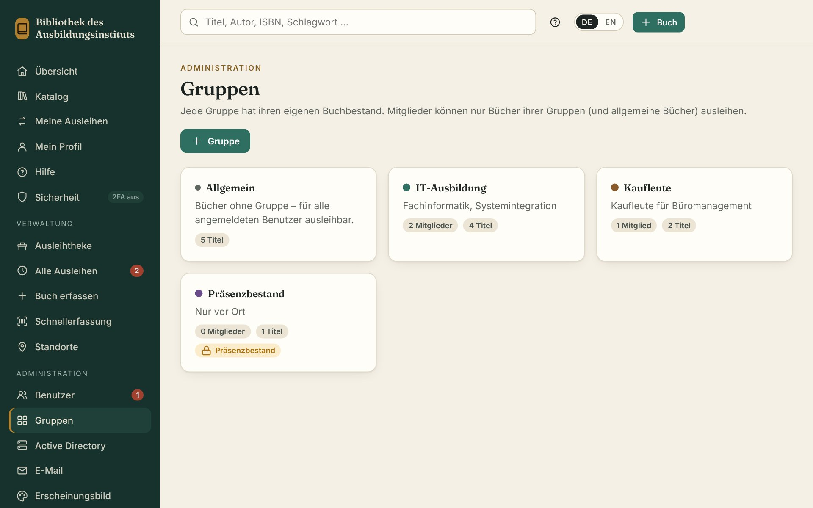
Präsenzbestand: Mit dem Haken Präsenzbestand – Bücher dieser Gruppe werden nicht verliehen bleiben die Bücher der Gruppe im Katalog sichtbar (mit Hinweis), werden aber nirgends mehr zum Verleihen angeboten – nicht an der Theke, nicht auf der Buchseite, nicht zum Selbst-Ausleihen und nicht zum Vormerken. Offene Vormerkungen dieser Bücher werden beim Speichern beendet; schon verliehene Exemplare werden ganz normal zurückgegeben. Beim Speichern übernimmt die Gruppe genau die angehakten Mitglieder.
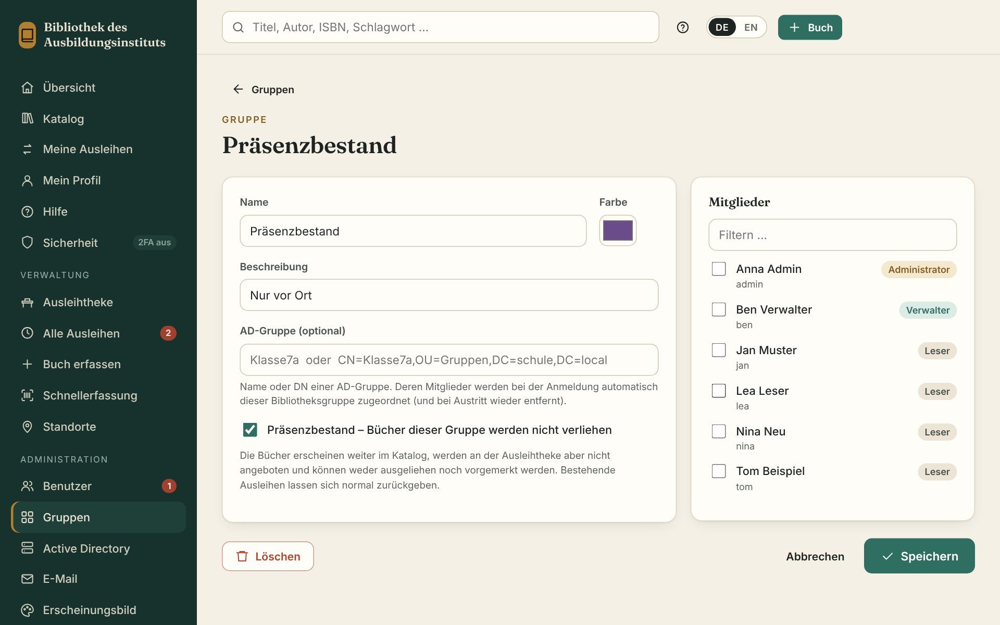
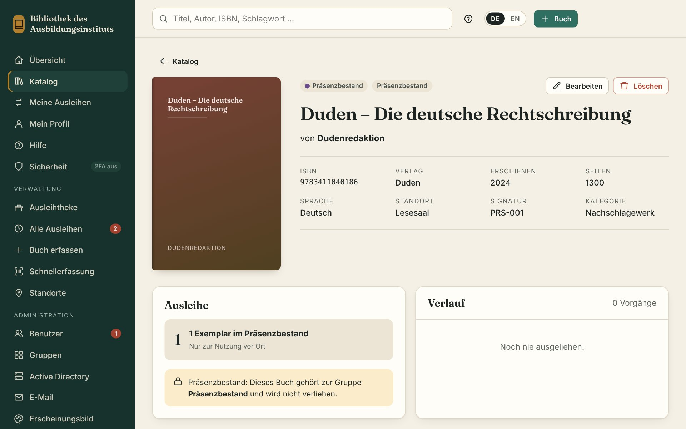
Mit dem Active Directory des Instituts (Windows Server oder Samba) melden sich alle mit ihren gewohnten Zugangsdaten an. Die Einrichtung übernimmt in der Regel die IT:
ldaps://dc1.firma.local), Verschlüsselung, Basis-DN und ein Dienstkonto mit Leserechten eintragen.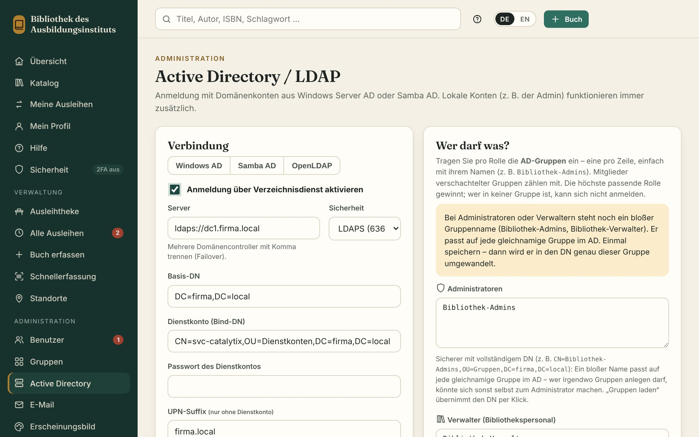
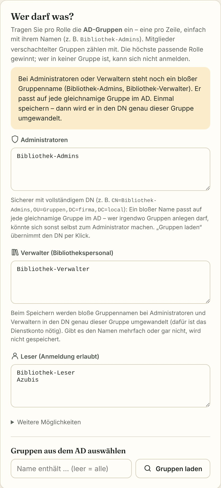
AD-Abgleich und Personen-Cache: Mit Dienstkonto holt das Programm im Hintergrund (standardmäßig stündlich) alle Personen, die die Bibliothek nutzen dürfen. Die Personensuche an der Theke findet sie dann sofort. Im AD deaktivierte, gelöschte oder nicht mehr berechtigte Konten werden gesperrt (nicht gelöscht) und automatisch wieder freigegeben, wenn die Person zurückkommt; Umbenennungen im AD werden erkannt. Eine Sicherheitsbremse verhindert, dass ein fehlerhafter Abgleich viele Konten auf einmal sperrt.
Unter E-Mail tragen Sie den Mailserver (SMTP) ein und wählen, welche Nachrichten verschickt werden. Testmail senden prüft die Einstellungen.
| Nachricht | Wann |
|---|---|
| Ausleihbestätigung | sofort bei der Ausleihe, mit Titel und Fälligkeit |
| Rückgabebestätigung | sofort bei der Rückgabe (standardmäßig aus) |
| Erinnerung | einige Tage vor der Fälligkeit (Standard: 2), einmal je Ausleihe |
| Mahnung | ab dem ersten überfälligen Tag, alle 7 Tage wiederholt, höchstens 3-mal (einstellbar) |
| Übersicht für Verwalter | täglich, nur wenn es in ihren Gruppen Überfälliges gibt (standardmäßig aus) |
| Fehlgeschlagene Datensicherung | an alle Administratoren |
Erinnerungen und Mahnungen laufen einmal täglich ab der eingestellten Uhrzeit; mehrere Bücher einer Person landen in einer E-Mail. Wichtig ist die Adresse der Bibliothek, damit Links in den E-Mails funktionieren. Unten auf der Seite steht das Versandprotokoll – es wird nach der Aufbewahrungsfrist automatisch geleert.
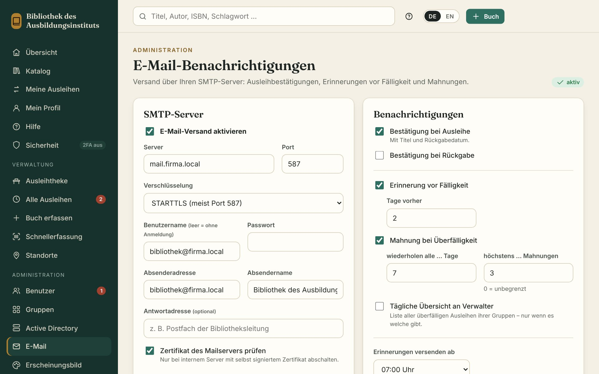
Unter Erscheinungsbild passen Sie die Bibliothek an Ihr Haus an – mit Live-Vorschau:
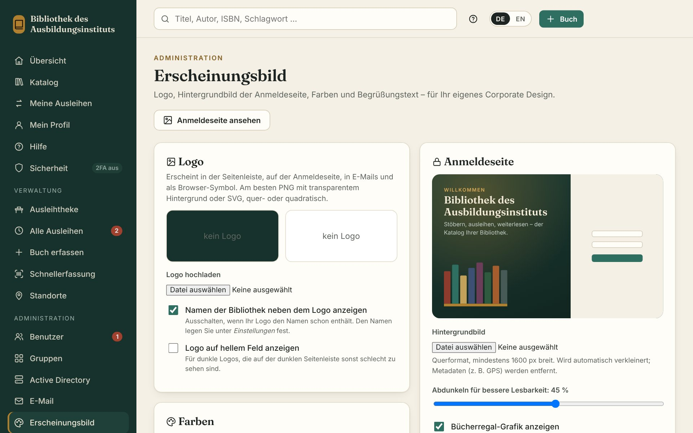
Die Einstellungen sind auf sechs Reiter verteilt. Jeder Reiter hat unten seinen eigenen Knopf Speichern und speichert nur seine eigenen Felder – Speichern in einem Reiter verändert nie etwas in einem anderen.
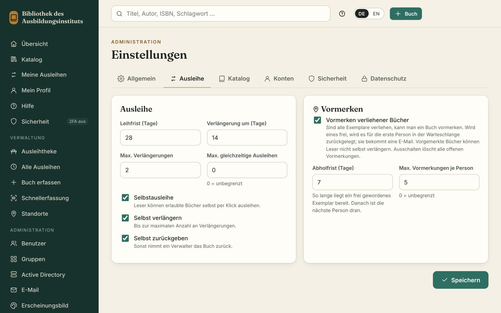
| Reiter → Bereich | Was Sie festlegen |
|---|---|
| Allgemein | Name der Bibliothek, Standardsprache; ob Leser den ganzen Katalog sehen oder nur ihre Gruppen und allgemeine Bücher. |
| Ausleihe → Ausleihe | Leihfrist (Standard 28 Tage), Verlängerung (14 Tage, höchstens 2-mal), Höchstzahl gleichzeitiger Ausleihen (0 = unbegrenzt), Selbstausleihe, selbst verlängern, selbst zurückgeben. |
| Ausleihe → Vormerken | ein/aus (Standard aus), Abholfrist (Standard 7 Tage), Höchstzahl offener Vormerkungen je Person (Standard 5). Ausschalten beendet alle offenen Vormerkungen. |
| Katalog → ISBN-Datenquellen | Welche Kataloge in welcher Reihenfolge abgefragt werden. |
| Katalog → Leseproben | Leseproben von Google Books erlauben (Standard aus), optional ein eigener Google-API-Schlüssel. Die Leseprobe lädt der Browser erst nach einem Hinweis und einem zweiten Klick von Google – das gehört in die Datenschutzerklärung. |
| Konten → Selbstregistrierung | aus (Standard) / mit Freigabe durch Administratoren / sofort aktiv; E-Mail-Bestätigung, erlaubte E-Mail-Domains, Gruppe für neue Leser. |
| Sicherheit → Zwei-Faktor-Anmeldung | Pflicht von außen, Regel im internen Netz, internes Netz, eigener Internetanschluss (siehe 5.8). |
| Sicherheit → Automatische Abmeldung | Fristen ohne Aktivität für alle, für Admins und von außen; Warnung vorher, Abmelden beim Schließen des Browsers (siehe unten). |
| Datenschutz → Rechtliches | Adressen von Impressum und Datenschutzerklärung (z. B. auf der Website des Instituts). Sie erscheinen auf der Anmeldeseite, in der Seitenleiste und in jeder E-Mail. Bei Betrieb im Internet in der Regel Pflicht. |
| Datenschutz → Aufbewahrung | Löschfrist für abgeschlossene Ausleihen und E-Mail-Protokoll (siehe 5.9). |
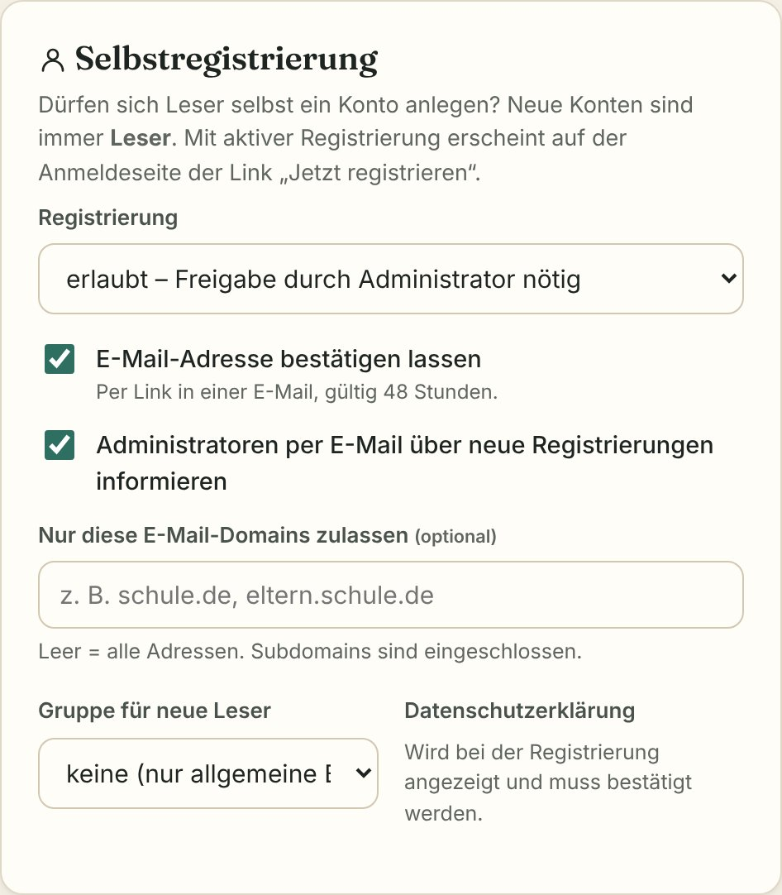
Wer so lange nichts mehr in der Bibliothek aufruft, wird abgemeldet. Es gilt jeweils die kürzeste passende Frist:
CATALYTIX_SESSION_HOURS in der .env, danach gilt, was hier eingestellt ist.„Angemeldet bleiben“ gibt es nur, wo keine kürzere Frist gilt – also nicht für Admins und nicht von außen, wenn dafür eine eigene Frist eingestellt ist.
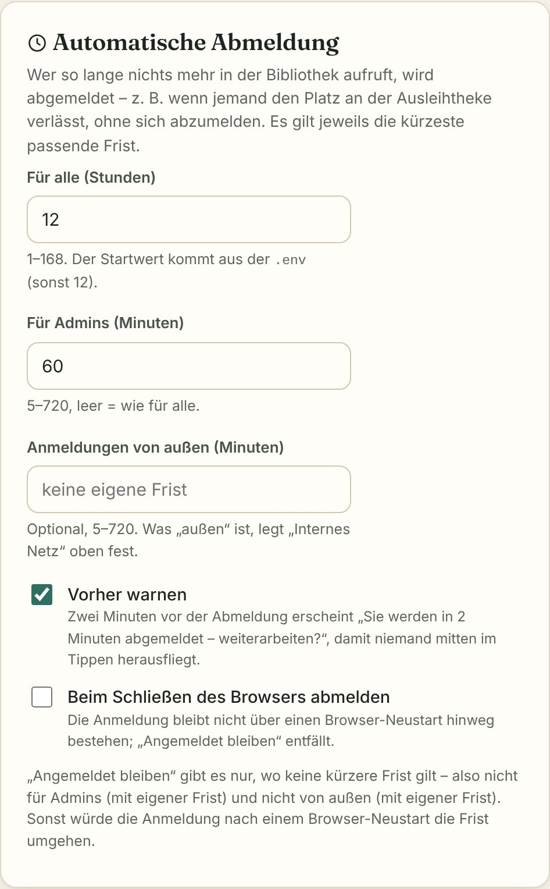
Die Zwei-Faktor-Regeln lassen sich für Zugriffe aus dem Internet und aus dem Hausnetz getrennt festlegen:
10.0.10.0/24. Leer bedeutet 10.x und 192.168.x; Docker-Netze (172.16–31.x) zählen nur, wenn Sie sie eintragen. Besser auf das echte LAN eingrenzen.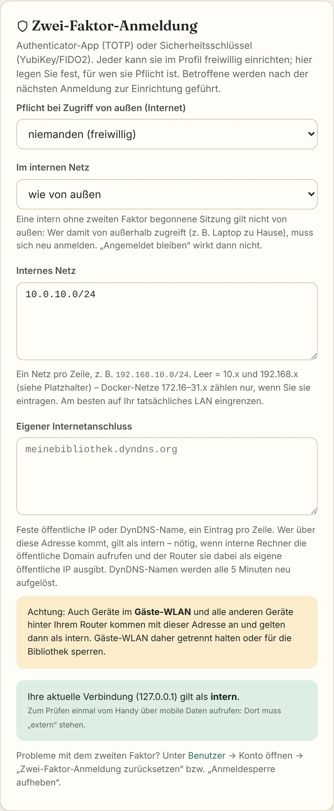
Nach der Datenschutz-Grundverordnung dürfen personenbezogene Daten nur so lange gespeichert werden wie nötig. Deshalb löscht das Programm automatisch:
Laufende und überfällige Ausleihen werden nie gelöscht. Der Lauf erfolgt einmal täglich; Jetzt bereinigen startet ihn sofort.
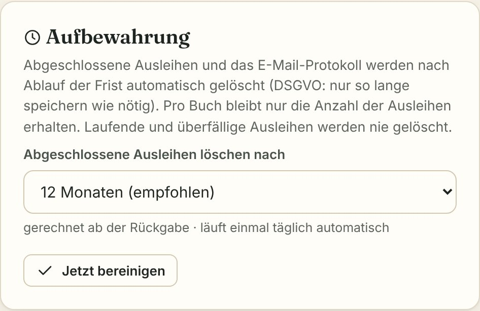
Die Datenbank wird jeden Tag automatisch gesichert (Standard ab 2 Uhr nachts), im laufenden Betrieb und mit einer Prüfung jeder Sicherung auf Beschädigung. Aufbewahrt werden die neuesten 10 Sicherungen; die Anzahl ist von 1 bis 100 einstellbar, ältere werden automatisch gelöscht.
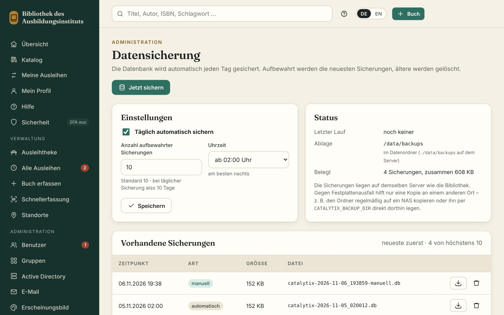
Kurzfassung für die Einrichtung auf dem Server. Alle Einzelheiten stehen in der README im Repository (github.com/soleil0815/catalytix).
Das Programm steckt komplett im fertigen Image ghcr.io/soleil0815/catalytix (für Intel/AMD und ARM, z. B. Synology oder Raspberry Pi) und hört auf Port 9300. Auf dem Server liegen nur docker-compose.yml, .env und der Datenordner ./data – kein Programmordner, nichts zu entpacken oder zu bauen.
mkdir -p /opt/catalytix && cd /opt/catalytix curl -fsSLO https://github.com/soleil0815/catalytix/releases/latest/download/docker-compose.yml curl -fsSL https://github.com/soleil0815/catalytix/releases/latest/download/env.example -o .env chmod 600 .env docker compose up -d
.env – alles darin ist optional. Ergänzungen wie ein NAS-Laufwerk für Sicherungen kommen in eine eigene docker-compose.override.yml. Beide werden bei Updates nie angefasst.http://SERVER:9300 öffnen (z. B. http://bibliothek.firma.local:9300) und das lokale Administratorkonto anlegen. Dafür wird der Einrichtungscode abgefragt: docker compose exec catalytix docker-entrypoint.sh flask --app wsgi setup-code.X-Forwarded-For mitschicken – das tun die genannten von sich aus. Port 9300 am Router nicht freigeben.X.Y.Z-s1, -s2 …).Mit einer Container-Verwaltung (Dockhand, Watchtower, Tugtainer …) wird die Bibliothek wie jeder andere Container aktualisiert. Empfehlung: die Update-Zeit nachts legen – beim Start einer neuen Version ist die Bibliothek kurz nicht erreichbar. Von Hand:
docker compose pull && docker compose up -d
Oder mit update.sh (liegt im Release; in denselben Ordner legen). Es macht dasselbe und zusätzlich: Es merkt sich das laufende Image als previous und wartet, bis die neue Version gesund gemeldet wird. Startet sie nicht, spielt es die Sicherung von vor dem Update zurück und startet wieder die vorige Version (mit Nachfrage, mit -y automatisch). Bringt das Image eine neuere docker-compose.yml mit, legt es sie ab und behält die alte als docker-compose.yml.alt.
./update.sh # neueste Version (oder die in der .env festgelegte) ./update.sh --version=3.1.0 # genau diese Version (auch ein Sicherheitsupdate 3.1.0-s1) ./update.sh --load catalytix-3.1.0-amd64.tar.gz # ohne Internet: Image-Datei aus dem Release
docker-compose.yml auf dem Server zu alt, steht das im Protokoll und für Administratoren auf der Übersicht.Ohne Internet: Im Release liegen die Images als Dateien (catalytix-X.Y.Z-amd64.tar.gz, für ARM -arm64) mit SHA256SUMS. update.sh --load prüft die Prüfsumme, lädt das Image und startet es.
Festlegen: In der .env CATALYTIX_TAG=3.1.0 eintragen (oder ./update.sh --version=3.1.0) – dann bleibt es bei dieser Version, auch mit Container-Verwaltung. CATALYTIX_TAG=latest folgt wieder jeder neuen Version.
Zurückgehen: Eine ältere Version braucht die Datenbank von damals. ./update.sh --version=X.Y.Z spielt die neueste Sicherung zurück, die diese Version lesen kann, und startet sie – es fragt vorher, denn alles seitdem Eingetragene geht verloren. Von Hand:
docker compose stop catalytix docker compose run --rm -e CATALYTIX_SKIP_DB_CHECK=1 catalytix flask --app wsgi restore-for-version 3.0.0 # in der .env: CATALYTIX_TAG=3.0.0 docker compose up -d
Bis 2.20 lagen Programmdateien auf dem Server (Zip-Paket, lokal gebaut). Einmalig im bisherigen Programmordner:
./update.sh --pull. Es holt 3.0, legt die neue docker-compose.yml, .env.example und das neue update.sh ab und startet../update.sh --cleanup. Es zeigt die Liste (nur bekannte Programmdateien wie catalytix/, Dockerfile, alte Zip-Pakete und lokal gebaute Images), fragt nach und löscht nur diese. Nie angefasst werden data/, Sicherungen, .env, docker-compose.yml und alles, was ein Container eingebunden hat – auch nicht über Verknüpfungen.Danach liegen im Ordner nur noch docker-compose.yml, .env, .env.example, update.sh und data/.
Zum Zurückspielen einer Sicherung wird die Bibliothek kurz angehalten. Der aktuelle Stand wird vorher automatisch als „vor Wiederherstellung“ gesichert, ein Fehlgriff lässt sich also rückgängig machen:
docker compose stop catalytix docker compose run --rm catalytix flask --app wsgi list-backups docker compose run --rm catalytix flask --app wsgi restore-backup catalytix-2026-11-05_020012.db docker compose start catalytix
Für einen kompletten Umzug auf einen anderen Server den ganzen Ordner ./data mitnehmen – er enthält neben der Datenbank auch Cover, Logo, Zertifikate und den Schlüssel, mit dem die Zwei-Faktor-Daten und die gespeicherten AD- und Mail-Passwörter verschlüsselt sind. Datenbank und secret_key gehören immer zusammen: Passt der Schlüssel nicht zur Datenbank, startet das Programm nicht und meldet das im Protokoll.
Alle Befehle im Container mit vorangestelltem docker compose exec catalytix docker-entrypoint.sh ausführen – so laufen sie mit den Rechten der App und nicht als root:
| Befehl | Wirkung |
|---|---|
flask --app wsgi reset-password admin | neues Passwort für ein lokales Konto setzen (aktiviert es wieder und hebt eine Anmeldesperre auf) |
flask --app wsgi reset-2fa admin | zweiten Faktor eines Kontos zurücksetzen (hebt auch die Sperre nach zu vielen falschen Codes auf) |
flask --app wsgi create-admin notfall | zusätzliches lokales Administratorkonto anlegen |
flask --app wsgi backup | Datenbank sofort sichern |
flask --app wsgi list-backups | Sicherungen anzeigen (auch „vor Update auf …“) |
flask --app wsgi send-reminders | Erinnerungen und Mahnungen sofort versenden |
flask --app wsgi apply-retention | Aufbewahrungsfrist sofort anwenden |
Kurze Antworten auf Fragen, die im Alltag am häufigsten auftauchen.
| Frage | Antwort |
|---|---|
| Warum kann ich ein Buch nicht ausleihen? | Es ist vergriffen (dann vormerken), gehört einer anderen Gruppe oder zum Präsenzbestand, ist für eine Vormerkung zurückgelegt, Sie haben es schon oder die Höchstzahl erreicht – oder die Selbstausleihe ist aus. Die Buchseite nennt den Grund; im Zweifel an der Ausleihtheke fragen. |
| Wie oft kann ich verlängern? | Standardmäßig zweimal um je 14 Tage. Danach kann die Bibliothek noch einmal verlängern. |
| Ich bekomme keine E-Mails. | Unter Mein Profil prüfen, ob eine E-Mail-Adresse hinterlegt und Benachrichtigungen eingeschaltet sind. Auch den Spam-Ordner ansehen. |
| Warum werde ich abgemeldet? | Nach einer Zeit ohne Aktivität meldet die Bibliothek automatisch ab (Abschnitt 2.3). Mit Weiterarbeiten im Hinweis davor bleiben Sie angemeldet. |
| Die Kamera startet nicht. | Die Kamera geht nur über die https-Adresse und braucht Ihre Erlaubnis im Browser. An der Theke ist ein USB-Barcodescanner zuverlässiger. |
| Der YubiKey wird nicht angenommen. | Sicherheitsschlüssel gelten nur für die Adresse, unter der sie eingerichtet wurden. Über eine andere Adresse (z. B. die IP) mit der Authenticator-App oder einem Wiederherstellungscode anmelden. |
| Im Haus werde ich trotzdem nach dem zweiten Faktor gefragt. | Unter Einstellungen → Sicherheit → Zwei-Faktor-Anmeldung zeigt die Seite, welche Adresse der Server sieht. Steht dort Ihre öffentliche IP, den eigenen Internetanschluss eintragen oder einen internen DNS-Eintrag anlegen (siehe 5.8). |
| Ein Standort ist falsch geschrieben. | Unter Standorte umbenennen – alle Bücher dort werden mit umgestellt. Alte Tippfehler stehen unter „Im Bestand, aber nicht festgelegt“ und lassen sich per Klick ersetzen. |
| Ein Buch steht doppelt im Bestand. | Beim Original die Zahl der Exemplare erhöhen und den doppelten Eintrag löschen (geht nur, wenn er nicht ausgeliehen ist). Neu erfasste Bücher mit derselben ISBN in derselben Gruppe werden seit 2.20 automatisch hinzugezählt. |
| Mein vorgemerktes Buch liegt bereit – was nun? | Innerhalb der Abholfrist ausleihen (selbst oder an der Theke). Die Frist steht auf der Übersicht; danach ist die nächste Person an der Reihe. |
| Nach einem Update startet die Bibliothek nicht. | Mit update.sh geht es automatisch zurück zur vorigen Version. Sonst im Protokoll nachsehen (docker compose logs catalytix) und bei Bedarf zurückgehen (Kapitel 6.3). |
| Etwas wurde versehentlich gelöscht. | Eine Sicherung vom Vortag zurückspielen (Kapitel 6.5). Bitte beachten: Alles, was seitdem passiert ist, geht dabei verloren. |
| Wer sieht meine Ausleihen? | Sie selbst, die Verwalter Ihrer Gruppen und die Administratoren. Abgeschlossene Ausleihen werden nach der Aufbewahrungsfrist gelöscht. |